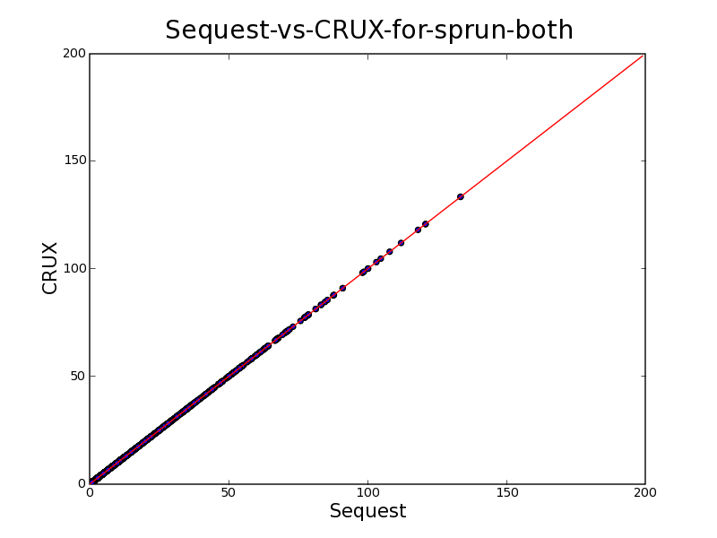
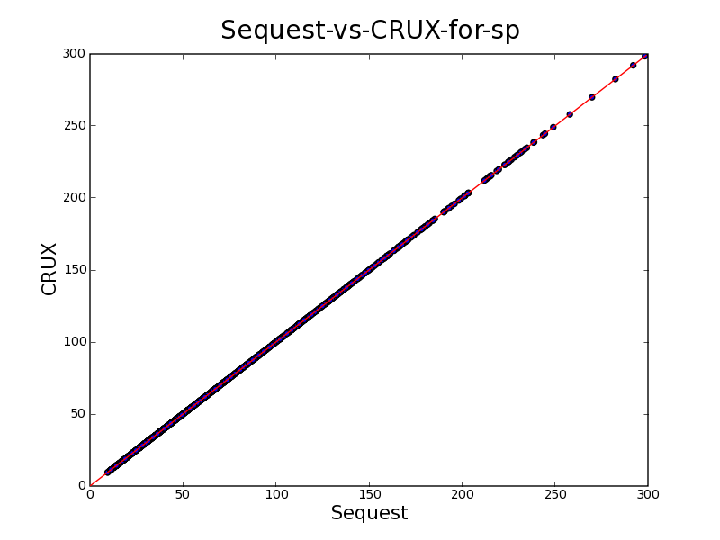

Proposed Sp
scoring method
1. Process observed spectrum
Remove peaks with m/z that are greater than experimental_mass + 50
Remove peaks within +/- 15 m/z of the precursor ion.
Square root the intensity of all peaks.
All peak's location(m/z) are
rounded to the nearest integer by
new_m/z = int( old_m/z /
bin_width + 0.5 ), bin_width = 1.0005079 m/z for mono mass,
1.0011413 for average mass.
If there are multiple peaks with the
same rounded integer m/z, choose only the max intensity peak and
remove the smaller peaks.
Normalize the peaks' intensity to 100, so that the max peak intensity equals 100.
Smooth peaks' intensity with formula.
∀i ∈ m/z in array s(including peaks and non peaks), s[i] = intensity,
construct
new array s1' such that,
s1'[i]
= (s[i-2]
+ 4*s[i-1] + 6*s[i] + 4*s[i+1] + s[i+2])/16
replace s with s1' as new spectrum array.
“Zero peak & extract”
i m/z in array, s[i] = intensity (s is now the new spectrum array from step 6)
construct a new array s2' by extracting peaks from s.
∀i ∈ m/z in array s,
compute the intensity σ,µ in a window i +/- 50m/z
if, s[i] > µ+σ, add to new array with s2'[i] = s[i]-(µ-σ), set in original s[i] = 0.
∀i ∈ m/z in array s,
compute the intensity σ,µ in a window i +/- 50m/z
if, s[i] > µ+2σ, add to new array with s2'[i] = s[i]-(µ-σ).
Replace s with s2' as new spectrum array.
Keep the top 200 abundant peaks(by peak intensity) in spectrum array, remove others.
Normalize the 200 peaks, so that the max peak intensity equals 100.
Equalize peak intensity in increasing m/z order,
∀continuous block of peaks(no zero intensity within the block),
max_intensity = max peak intensity in the continuous block,
∀i ∈ peak location(m/z) in block,
S[i] = max_intensity
2. Predict fragment ions, use B and Y ions, limit the maximum fragment-ion-charge to (precursor-ion-charge -1), if precursor-ion-charge == +1, set max to +1 .
3. Calculate the Normalized_intensity_sum.
For each predicted fragment ion, if there is a matching m/z peak in the processed observed spectrum, add the matching peak's intensity.
The total summation off all the matching peak's intensities, equal the Normalized_intensity_sum.
4. Calculate Sp,
Sp = Normalized_intensity_sum * ni * (1 + m*BETA) / nt
ni = the number of predicted fragment ions that have a matching peak
nt = the total number of predicted fragmented ions
m = continuity count of an ion series, ex, if B2-B3-B4 Y3-Y4 match, than m=3
BETA = 0.075
Comments

figure
1: CRUX vs Sequest on all top 500 matches

figure2:
CRUX vs Sequest on top 5 Xcorr ranked peptides
In the step 10, equalize peak, do not equalize the very last peak in the spectrum array. I believe it is a Sequest bug.
When iterating through the spectrum array, always iterate in increasing m/z order.
In step 7, when calculating σ,µ,
µ = total_intensity / (m/z window -1), in our case (m/z window) = 101
σ = sqrt(sum{(s[i] - µ)^2}/ (m/z window))